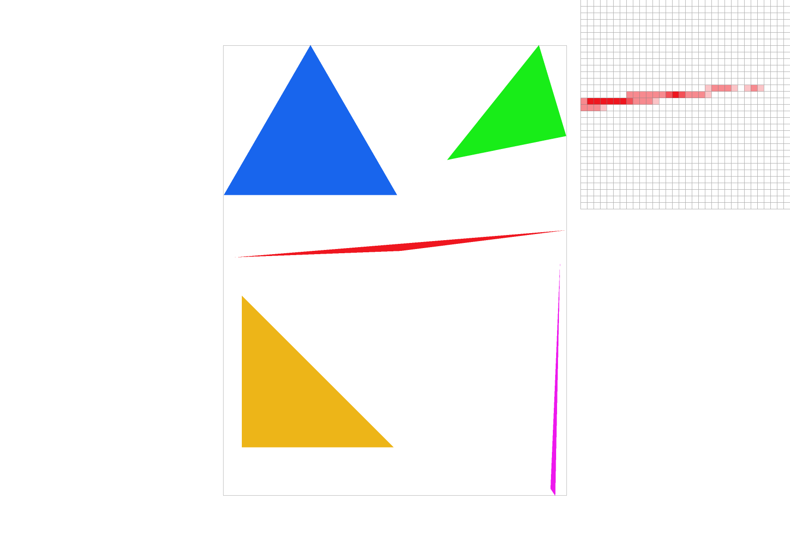
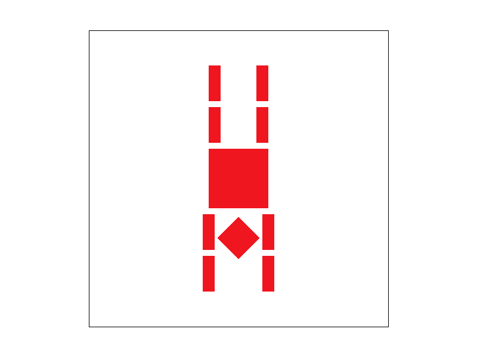
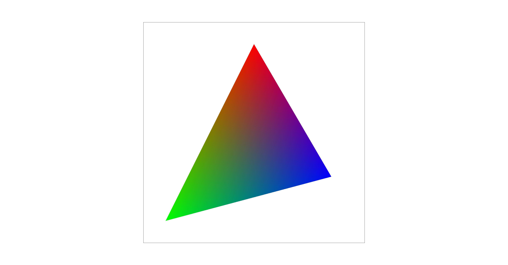
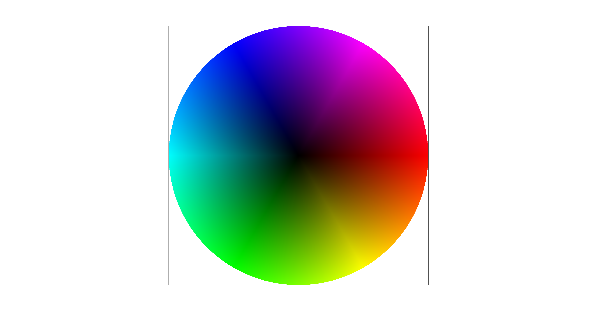
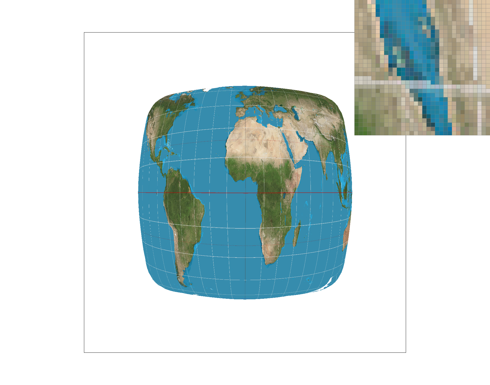
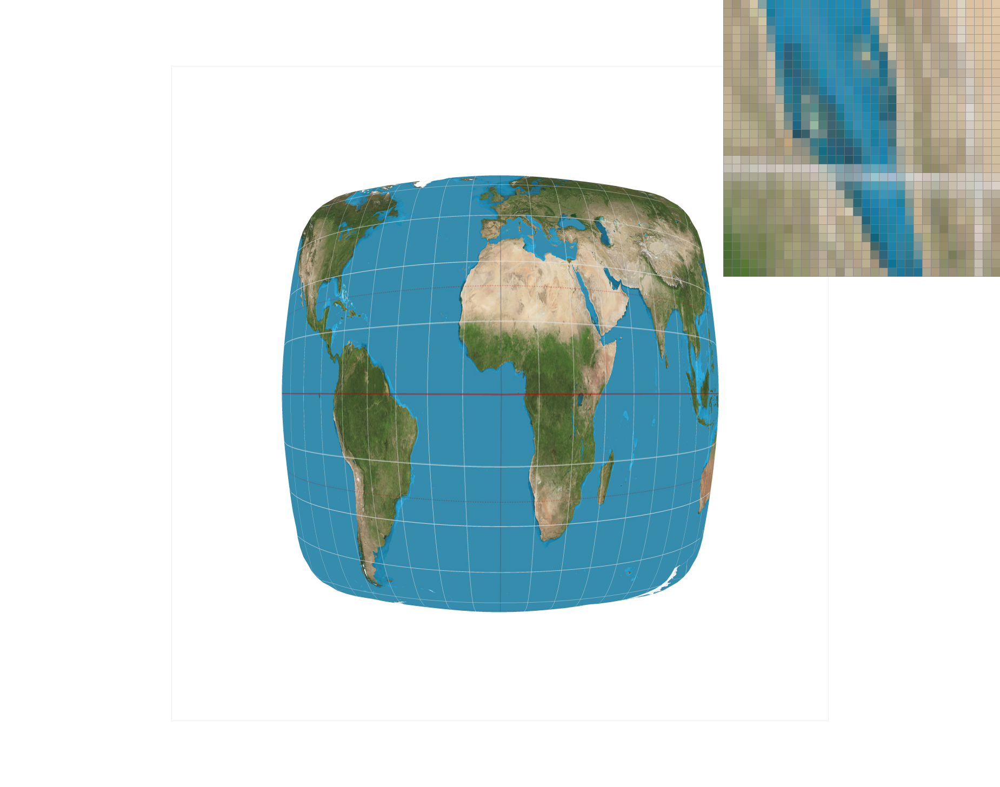
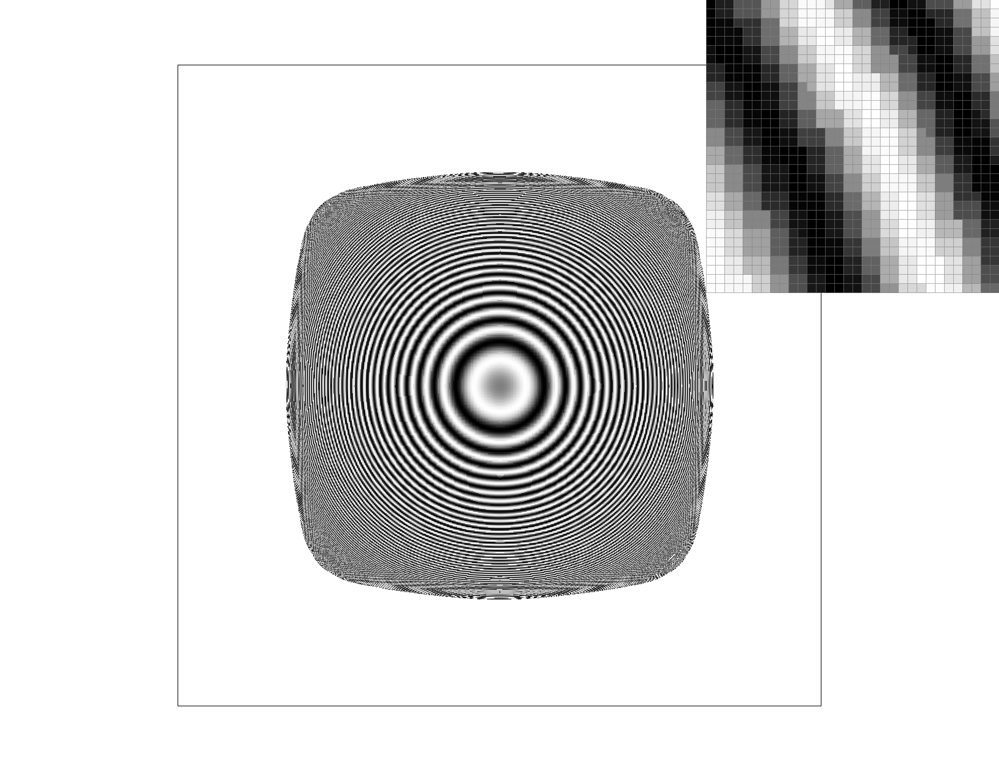
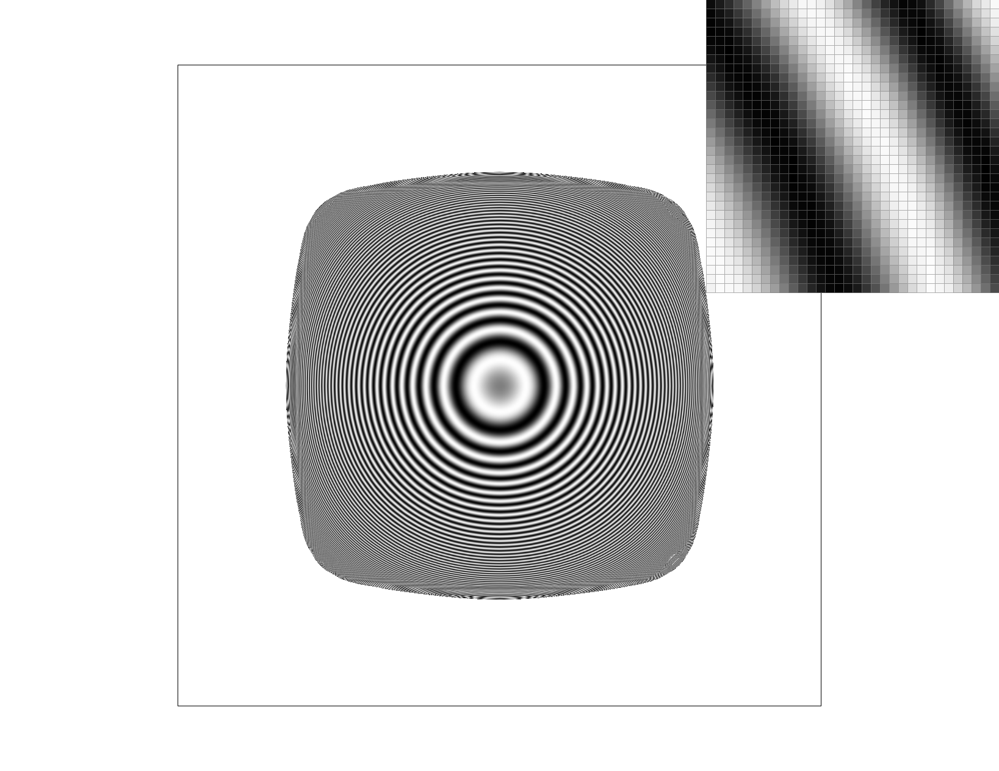
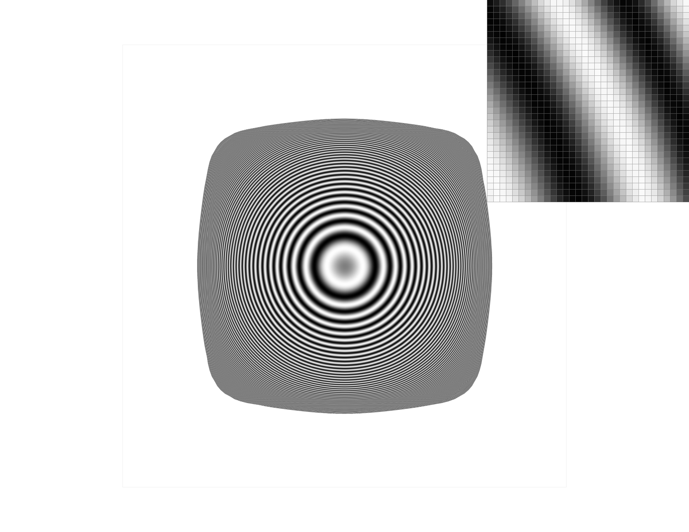

Overview
The description of this project can be found here.
In this project, I implement a simple rasterizer, including features like drawing triangles, supersampling with different sampling rates, hierarchical transforms, and texture mapping with antialiasing.
For example, I implement different pixel sampling methods such as nearest neighbor sampling and bilinear interpolation sampling, and level sampling technique (mipmap).
Part 1: Rasterizing single-color triangles
My algorithm to rasterize a triangle consists of the following steps:
- Get the bounding box of the triangle by getting the minimum and maximum x and y of the three vertices.
- Only loop through and sample the pixels within the bounding box of the triangle (one sample per pixel).
- For each pixel being sampled, call fill_pixel() if the pixel is inside the triangle. To check if the pixel is inside the triangle, I create a function point_in_triangle() which calls another function line_equation_test().
- line_equation_test(): Check if inner product(sample point-vertex0, perpendicular(vertex1-vertex0)) >= 0. More specifically, -(x - x0) * (y1 - y0) + (y - y0) * (x1 - x0) >= 0. Here, I also consider the case that inner product = 0 so that all the sample points that lie on triangle boundaries are taken into account.
- point_in_triangle(): Check if the sample point is inside the triangle. If line_equation_test() of the sample point and all three boundaries are all Trues, then the sample point is inside the triangle.
My algorithm was not able to deal with both counter-clockwise vertices and clockwise vertices cases. So I add another function line_equation_test2() and modify my point_in_triangle() to check if either line_equation_test() or line_equation_test2() of the sample point and all three boundaries are all Trues. This method successfully helps solve my problem.
- line_equation_test2(): Checks if (x - x0) * (y1 - y0) - (y - y0) * (x1 - x0) >= 0.
Part 2: Antialiasing triangles
Supersampling is useful because it gives a similar result as applying a 1-pixel box filter to our signal.
It helps to filter out the high frequency and reduces aliasing by sampling multiple locations within a pixel and averaging their values.
-
Data Structure:
I set the sample_buffer vector size to width * height * sample_rate. For each sub-pixel within a pixel, I assign an index to it so that I can store/get its color in sample_buffer at position sample_rate * (y * width + x) + index, i.e., sample_buffer[sample_rate * (y * width + x) + index] = color. For convenience, I also add an additional index argument for fill_pixel(). -
Algorithm:
-
(1) 4 nested loops are set up to loop through each sub pixel: width*height*sqrt(sample_rate)* sqrt(sample_rate).
(2) Get sub-pixel’s sample location.
(3) Check if the sub-pixel is within the triangle. If yes, call fill_pixel(x, y, index, color). - resolve_to_framebuffer(): average the color of all sub-pixels within the same pixel and store the color in framebuffer (i.e., downsample to original resolution) so that image can be displayed.
-
(1) 4 nested loops are set up to loop through each sub pixel: width*height*sqrt(sample_rate)* sqrt(sample_rate).
Here are the results:
As the sampling rate goes up, we are sampling at a higher resolution image.
Then, I average the signal/color of all sub-pixels within each pixel. That’s why we can observe more than 2 colors, instead of just pure white and pure red at higher sampling rates.
The aliasing is reduced when we increase the sampling rate.
|
|

|
|
|
|
Part 3: Transforms
I make the cubeman do a handstand! I rotate the whole cubeman at the highest level, and also rotate and translate both arms.

|

|
Part 4: Barycentric coordinates
Barycentric coordinates allow us to express a point within a triangle as a weighted average of the vertices of the triangles.
See the left image below:
|

|

|
A random point (P) within the triangle = alpha * P_red + beta * P_blue + gamma * P_green,
where P_red, P_blue, and P_green are the three vertices, and they can be positions, texture, coordinates, color, ….
See here for how alpha, beta, and gamma can be calculated.
Part 5: "Pixel sampling" for texture mapping
The primary purpose of texture mapping is to find the correspondence between screen pixels and texture pixels (texels), that is, to determine the color of a screen pixel by sampling the underlying texture.
Since the resolutions of a screen (or a surface of an object, rendered image, etc.) and a texture might not be the same, we have to do pixel sampling (upsample or downsample texture) so that the two’s resolutions match.
Before doing pixel sampling, we first determine where a pixel lands in the texture coordinate (u, v) by interpolating using barycentric coordinates.
After getting the (u, v), we can start pixel sampling. Here are two pixel sampling methods that are used in this project:
- Nearest Neighbor Pixel Sampling: The color of (u, v) is determined by the nearest texel’s color.
- Bilinear Interpolation Sampling: The color of (u, v) is the weighted average color of the nearest four texels’ color. See here for more explanation.
|

|

|
|
|
|
Compare nearest sampling with bilinear sampling:
As shown above, when sampling rate = 1, nearest pixel sampling causes a part of the longitude line missing in the rendered image. This is because only the nearest texel is considered. The nearest texels of the pixels where the longitude line are missing might just not be the texels of those longitude line. Using bilinear sampling under the same situation results in a better texture mapping, the texture seems more blurred though.
Compare different sampling rates (supersampling):
Supersampling alleviates the antialiasing problem but in a computation-costly way. Under supersampling, we can still see that the result of bilinear sampling is still better than nearest pixel sampling. Bilinear sampling overall seems to be more blurred than nearest sampling.
Part 6: "Level sampling" with mipmaps for texture mapping
When there is perspective/3D information in an image, level sampling and mipmap help to achieve better texture mapping and reduce computation time. Mipmap has a pyramid-like hierarchy and stores texture at different downsampled/pre-filtered scales/levels. To determine which level D of a mipmap to use for a particular screen-space pixel (x, y), we follow the steps below (from discussion sheet):
Here are slides that explain how mipmax works and how mipmap level can be computed.
Discussion on different sampling techniques:
| Speed ( “>” means faster) |
Memory Usage ( “>” means need more memory) |
Antialiasing Power ( “>” means better) |
|
| number of samples per pixel (Task2) |
The fewer samples per pixel the faster. sampling rate = 1 > 4 > 9 > 16 | sampling rate = 1 < 4 < 9 < 16 | sampling rate = 1 > 4 > 9 > 16 |
| pixel sampling (Task5) |
nearest sampling > bilinear sampling | Bilinear sampling might uses slightly more memory. | bilinear sampling > nearest sampling |
| level sampling (Task6) |
level-0 > nearest > bilinear | bilinear = nearest > level-0 (4/3 times more memory usage) | bilinear > nearest > level-0 |
|

nearest sampling sample_rate = 1 |

bilinear sampling sample_rate = 1 |
|
nearest sampling sample_rate = 1 |
bilinear sampling sample_rate = 1 |
|
nearest sampling sample_rate = 1 |
bilinear sampling sample_rate = 1 |

bilinear sampling
sample_rate = 16